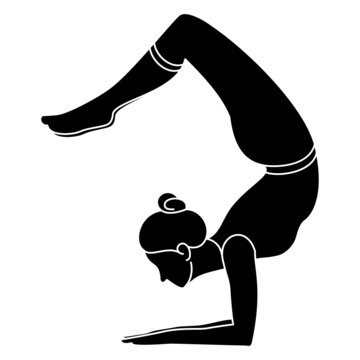

Exercise Description
Start in a forearm stand (Pincha Mayurasana). Slowly bend your knees and lower your feet towards your head, arching your back and bringing your feet to touch or hover above your head. Engage your core and shoulders to maintain balance.
Reps and Sets
Beginners: 3 sets of 30-60 seconds
Rest time between each set: 45secs
Video Implementation